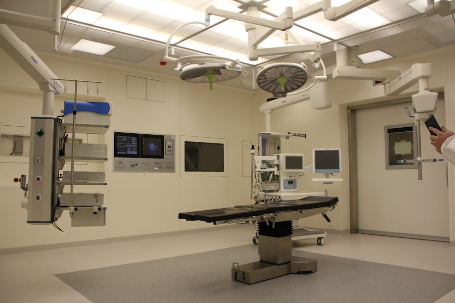

When Every Second Counts, We Are Here.
Our dedicated Veterinary Emergency & Critical Care ICU is fully staffed 24 hours a day, 365 days a year. Our surgeons and emergency clinicians stand ready to stabilize, diagnose, and treat acute trauma.
Emergency Hospital Entrance
742 Evergreen Terrace (Use Red ER Bay 4 for ambulance & emergency drop-off)
Critical Symptoms Requiring Immediate Evaluation
If your pet exhibits any of the following clinical warning signs, bring them to our emergency hospital immediately. Do not wait for normal clinic hours.
Severe Breathing Distress
Open-mouth breathing in cats, blue/pale gums, gasping, extended neck, or rapid shallow panting that does not subside after rest.
Acute Trauma & Hit-by-Car
Motor vehicle accidents, high falls, deep animal bite wounds, arterial bleeding, visible fractures, or profound limping.
Toxin & Poison Ingestion
Ingestion of rodenticide, antifreeze, dark chocolate, lilies (deadly to felines), human NSAID medications, or xylitol sweetener.
Urinary Blockage
Particularly male cats straining in litter boxes without producing urine, crying in pain, or repeatedly licking genitals. Fatal within 24–48 hours.
Gastric Dilatation (Bloat / GDV)
Distended, hard abdomen in large dogs, unproductive retching/retching foam, severe restlessness, and pacing. Requires emergency surgery.
Seizures & Collapse
Sudden collapse, unresponsive state, or active continuous cluster seizures lasting longer than two minutes.
What to Do Before Arriving at the Hospital
Providing safe first-aid stabilization en route preserves life and minimizes shock.
-
1Call Ahead at (555) 924-PETS:
Calling en route allows our triage team to prepare an oxygen tent, warm IV fluids, or our trauma surgical suite prior to your arrival.
-
2Handle with Extreme Care:
Injured or terrified pets may bite instinctively. Transport injured dogs on a flat wooden board or firm blanket as a stretcher.
-
3Control Active Bleeding:
Apply gentle, firm direct pressure with clean towels. Do not apply tourniquets without professional veterinary guidance.
-
4Bring Toxin Samples:
Bring the packaging, plant leaves, chemical bottle, or vomit sample if poisoning is suspected.
Transparent Triage & Emergency Admission
Emergency medical situations are naturally stressful. We believe financial transparency should remain paramount even during emergencies.
- Immediate Primary Triage: A licensed veterinary technician assesses vitals at the door without delay.
- Upfront Stabilization Plan: We discuss initial resuscitation estimates with you before administering costly non-urgent procedures.
- Flexible Payment Options: We accept all major cards, CareCredit, and Scratchpay, and assist with immediate pet insurance claims.
Average Wait Time:
Critical patients (airway, breathing, circulation) are transferred directly to oxygen ICU immediately upon arrival.
Emergency Care FAQs
Essential guidance for pet parents during unexpected veterinary medical situations.
Our Trauma Team Is Standing By Right Now
Located at 742 Evergreen Terrace. Follow red hospital signs to Emergency Bay 4 for designated parking and rapid patient intake.
Call (555) 924-PETS